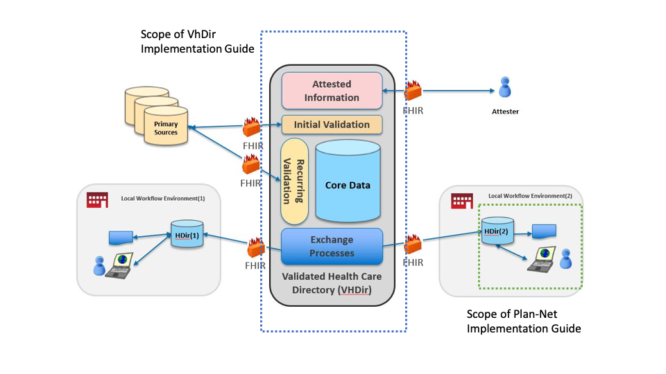

The Payer Directory Implementation Guide (Provider Directory IG) is based on FHIR R4.0. It was developed in cooperation with the Da Vinci Project and the the Office of the National Coordinator for Health Information Technology (ONC) with guidance from HL7 International, the Patient Administration Workgroup, and the HL7 US Realm Steering Committee.
It describes the architectural considerations for a payer to share their provider directory. We have strived to make this guide as broadly applicable as possible. However, every implementation may not use all of the content in this guide. It serves as a “standard” for the exchange of provider data, while describing additional data elements and capabilities that support more robust implementations.
VhDir and Plan-net Implementation Guide Scopes Primary Authors: Dan Chaput, Alex Kontur, Brian Postlethwaite, Bob Dieterle
This implementation guide was written for a US audience and profiles resources from the R4 version of the US Core IG, where available (Practitioner, PractitionerRole, Organization and Location), and otherwise from R4 (OrganizationAffiliation, HealthCareService, Endpoint). Alignment with VhDir is maintained by using extensions from VhDir where possible.
Provider directories play a critical role in enabling identification of individual providers and provider organizations, as well as characteristics about them. Provider directories support a variety of use cases, including:
NPI = 1237551547 GET https://davinci-plan-net-ri.logicahealth.org/fhir/Practitioner?identifier=1237551547
https://davinci-plan-net-ri.logicahealth.org/fhir/PractitionerRole?practitioner.identifier=1235733566
Note: the following diagrams provide a high-level view of the relationships between resources used in this IG. They do not necessarily reflect all of the relationships/references between resources.
A practitioner is a person who is directly or indirectly involved in the provisioning of healthcare.
PractionerRole describes the relationship between a practitioner and an organization. A practitioner provides services to the organization at a location. Practitioners also participate in healthcare provider insurance networks through their role at an organization.
Figure 1: Practitioner and PractionerRole

Figure 2: Organization

Similar to PractitionerRole, OrganizationAffiliation describes relationships between organizations. For example: 1) the relationship between an organization and an association it is a member of (e.g. hospitals in a hospital association), 2) an organization that provides services to another organization, such as an organization contracted to provide mental health care for another organization as part of a healthcare provider insurance network, and 3) distinct organizations forming a partnership to provide services (e.g. a cancer center).
Figure 3: OrganizationAffiliation

InsurancePlan describes a health insurance offering comprised of a list of covered benefits (i.e. the product), costs associated with those benefits (i.e. the plan), and additional information about the offering, such as who it is owned and administered by, a coverage area, contact information, etc.
Figure 4: InsurancePlan

The HealthcareService resource is used to describe a single healthcare service or category of services that are provided by an organization at a location. The location of the services could be virtual, as with telemedicine services.
Figure 5: Healthcare Service

An endpoint describes the technical details of a location that can be connected to for the delivery/retrieval of information. Sufficient information is required to ensure that a connection can be made securely, and appropriate data transmitted as defined by the endpoint owner.
A Location includes both incidental locations (a place which is used for healthcare without prior designation or authorization) and dedicated, formally appointed locations. Locations may be private, public, mobile or fixed and scale from small freezers to full hospital buildings or parking garages.
A network is a group of practitioners and organizations that provide healthcare services for individuals enrolled in a health insurance product/plan (typically on behalf of a payer).
Figure 6: Network

This Capability Statement defines the expected capabilities of a Payer directory FHIR server conforming to the Payer Directory Implementation Guide.
|
Mode |
SERVER |
|
Description |
|
|
Transaction |
|
|
System History |
|
|
System Search |
y |
|
Resource Type |
Profile |
Read |
V-Read |
Search |
|
Practitioner |
http://hl7.org/fhir/uv/vhdir/StructureDefinition/vhdir-practitioner |
y |
y |
y |
|
PractitionerRole |
http://hl7.org/fhir/uv/vhdir/StructureDefinition/vhdir-practitionerrole |
y |
y |
y |
|
Organization |
y |
y |
y |
|
|
OrganizationAffiliation |
http://hl7.org/fhir/uv/vhdir/StructureDefinition/vhdir-organizationaffiliation |
y |
y |
y |
|
HealthcareService |
http://hl7.org/fhir/uv/vhdir/StructureDefinition/vhdir-healthcareservice |
y |
y |
y |
|
Location |
http://hl7.org/fhir/uv/vhdir/StructureDefinition/vhdir-location |
y |
y |
y |
|
Endpoint |
y |
y |
y |
|
|
InsurancePlan |
http://hl7.org/fhir/uv/vhdir/StructureDefinition/vhdir-insuranceplan |
y |
y |
y |
General Security Considerations
The following are the Provider Directory security considerations that implementers should follow:
The following are security conformance requirements for Provider Directory actors:
{kind=link}